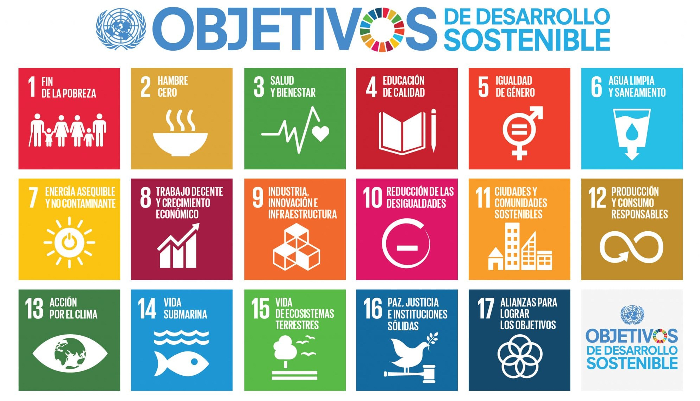

Situación/Pregunta Inicial
La pregunta inicial para plantear el proyecto, siguiendo los pasos del método científico, podría ser:
"¿Cómo podemos utilizar la tecnología y el arte del flamenco para crear una experiencia educativa interactiva que integre diferentes disciplinas y fomente la inclusión social del pueblo gitano?"
Esta pregunta guía al alumnado en el uso del método científico:
- Observación: Análisis del contexto cultural y tecnológico.
- Formulación de hipótesis: Predicciones sobre cómo la tecnología puede promover el aprendizaje y la inclusión.
- Experimentación: Diseño y prueba de prototipos tecnológicos y artísticos.
- Análisis de resultados: Evaluación del impacto educativo y social.
- Conclusión y comunicación: Presentación pública del concurso y publicación en la web.
Conociendo los ODS
Seguro que por desgracia alguna vez habrás oído hablar del hambre, la guerra, la pobreza, el agotamiento de los recursos naturales, el calentamiento global...
Para hacer visibles e intentar dar solución a estos problemas existente en nuestro planeta, los países miembros de Naciones Unidas, la mayor organización internacional de países para el fomento de la paz y la seguridad mundial, se pusieron de acuerdo en 2015 en la Asamblea General de las Naciones Unidas (AG-ONU), para fijar diecisiete Objetivos de Desarrollo Sostenible (ODS de aquí en adelante) que pretende alcanzarse para 2030. Son estos:

1. Poner fin a la pobreza en todas sus formas en todo el mundo.
2. Poner fin al hambre, lograr la seguridad alimentaria y la mejora de la nutrición y promover la agricultura sostenible.
3. Garantizar una vida sana y promover el bienestar para todos en todas las edades.
4. Garantizar una educación inclusiva, equitativa y de calidad y promover oportunidades de aprendizaje durante toda la vida para todos.
5. Lograr la igualdad entre los géneros y empoderar a todas las mujeres y las niñas.
6. Garantizar la disponibilidad de agua y su gestión sostenible y el saneamiento para todos.
7. Garantizar el acceso a una energía asequible, segura, sostenible y moderna para todos.
8. Promover el crecimiento económico sostenido, inclusivo y sostenible, el empleo pleno y productivo y el trabajo decente para todos.
9. Construir infraestructuras resilientes, promover la industrialización inclusiva y sostenible y fomentar la innovación.
10. Reducir la desigualdad en y entre los países.
11. Lograr que las ciudades y los asentamientos humanos sean inclusivos, seguros, resilientes y sostenibles.
12. Garantizar modos de consumo y producción sostenible.
13. Adoptar medidas urgentes para combatir el cambio climático y sus efectos.
14. Conservar y utilizar en forma sostenible los océanos, los mares y los recursos marinos para el desarrollo sostenible.
15. Promover el uso sostenible de los ecosistemas terrestres, luchar contra la desertificación, detener e invertir la degradación de las tierras y frenar la pérdida de la diversidad biológica.
16. Promover sociedades pacíficas e inclusivas para el desarrollo sostenible, facilitar el acceso a la justicia para todos y crear instituciones eficaces, responsables e inclusivas a todos los niveles.
17. Fortalecer los medios de ejecución y revitalizar la Alianza Mundial para el Desarrollo Sostenible.
Reflexiona sobre cómo podemos contruibuir a la consecucion de estos ODS desde este humilde proyecto escolar.
(Integrar estos ODS en el proyecto no solo proporciona un marco de referencia, sino que también ayuda a los estudiantes a entender la importancia de su trabajo en un contexto global, promoviendo valores de responsabilidad social y compromiso con la inclusión)
Inicio ficha Diario Aprendizaje
Inicia la ficha de tu Diario de Aprendizaje ahora que sabes lo que vamos a hacer. Rellena los Pasos 1 y 2
A debate
Al inicio del proyecto, se pueden proponer estos temas de debate para hacer pensar a los estudiantes y profundizar en el contexto cultural y social del flamenco:
¿Qué representa el flamenco en la identidad cultural española? ¿Qué aportó el pueblo gitano a este arte?
¿Cómo puede la tecnología ayudar a conservar las tradiciones?
¿Qué prejuicios persisten hacia la cultura gitana y cómo podemos combatirlos?
¿Por qué es importante que el arte y la ciencia dialoguen en la escuela?
¿Cómo podemos utilizar la tecnología para preservar y difundir las tradiciones culturales como el flamenco?
¿Qué desafíos enfrenta la comunidad gitana en la actualidad y cómo puede el flamenco ser una herramienta de integración y respeto?
¿Cuáles son las implicaciones sociales y culturales de integrar un proyecto sobre flamenco en el aula?